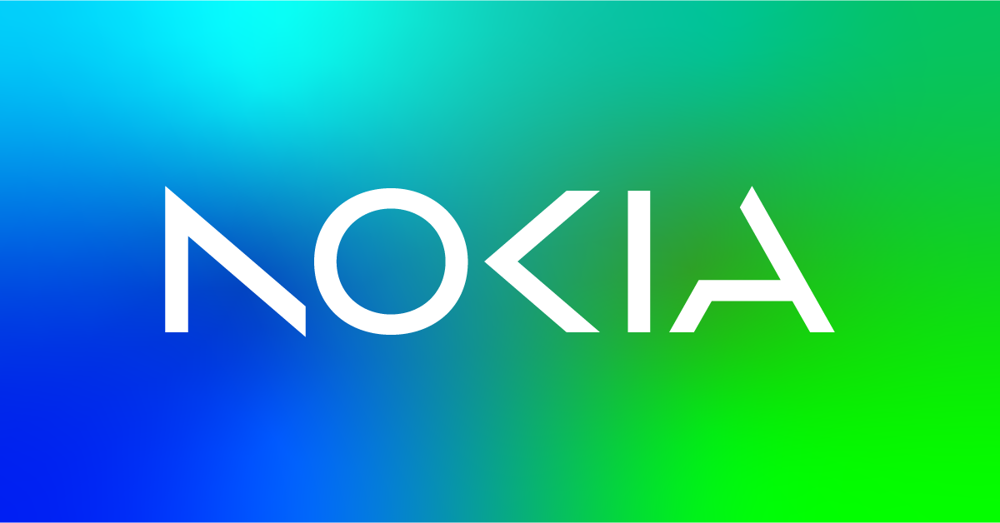

Overview
TI led a project to revamp a section of Nokia’a website in line with the company's fresh design standards.
My role involved research, feature ideation, refining the user interface and experience, optimizing content, and crafting
visually engaging designs. The project's goal was to elevate usability, organize information effectively, and maintain
visual consistency, leading to increased productivity and user satisfaction.
Define
This project was about establishing a centralized medium that enables members to contribute and access this
knowledge in an organized and good user experience. By creating such a hub, developers can collaboratively share their insights,
fostering efficient knowledge exchange and cultivating a stronger sense of collaboration.